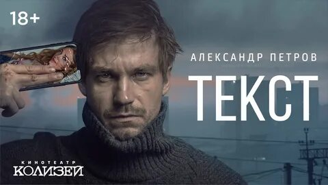

Ссылка на фильм
Сюжет.
Сюжет фильма Текст.
В подмосковной Лобне вместе с матерью живёт двадцатилетний Илья Горюнов. Илья — студент филологического факультета МГУ; мать Ильи, воспитавшая сына одна, учительница русского языка и литературы. Отмечая окончание сессии, действуя наперекор матери, Илья отправляется со своей девушкой Верой в московский клуб «Рай». Неожиданно в клуб врывается наркополиция ФСКН с рейдом: у Ильи и Веры наркотиков не было, но Веру всё равно задерживает сотрудник в штатском Пётр Хазин. Илья пытается воспрепятствовать задержанию Веры и оскорбляет задержавшего её Хазина: в отместку молодой офицер подбрасывает ему кокаин. В итоге Илью сажают в колонию на семь лет по ложному обвинению в сбыте наркотиков.
В 2019 году, отбыв весь срок, Илья возвращается в Лобню к матери, однако узнаёт, что она умерла от сердечного приступа за день до его возвращения. Он приезжает к бывшей девушке Вере, за которую когда-то заступился, но она отказывается с ним общаться; также Илья встречается со старым другом Серёгой, но понимает, что они стали друг другу чужими. Находясь в колонии, Илья следил за страницами Хазина в социальных сетях: полицейский за это время добился повышения по службе и живёт обеспеченной и насыщенной жизнью. Илья тяжело переживает смерть матери и тот факт, что он был несправедливо посажен на семь лет, и, напившись, решает встретиться с обидчиком, чтобы спросить, за что тот так поступил с ним. Из поста в «Инстаграме» Хазина[12] Илья узнаёт, в какой он отправляется клуб, они встречаются, и у них происходит драка, в ходе которой Горюнов случайно убивает Хазина. Илья мечется по близлежащей территории в поисках места, куда можно спрятать труп, и в итоге сбрасывает тело Хазина в канализационный люк, а его пистолет и телефон забирает с собой.
На следующее утро Илья с трудом вспоминает события прошлой ночи: он обнаруживает пистолет и телефон, на котором высвечивается пропущенный вызов от некоего Дениса Сергеевича и сообщение от матери Хазина. Он вспоминает пароль, который Хазин выводил на телефоне перед смертью. Чтобы создать видимость, что Хазин жив, и выиграть время, Илья переписывается с родителями, девушкой и начальником Хазина. Из переписки Хазина Илья узнаёт, что у него должна состояться сделка по продаже наркотиков, которые Пётр ранее конфисковал у злоумышленников. Илья хочет провести эту сделку вместо Хазина, притворившись его курьером, а на вырученные деньги похоронить мать и сбежать от правосудия в Колумбию. В телефоне Хазина Илья находит исчерпывающую информацию о нём: о его преступных сделках, об отношениях с девушкой Ниной и родителями. Постепенно Илья сам начинает отождествлять себя с Хазиным: он влюбляется в его девушку и решает внутрисемейные проблемы Петра через экран смартфона, постепенно начиная понимать своего врага.
Вскоре Илья встречается с Магомедом, чтобы забрать 300 тысяч евро в качестве оплаты за товар, который, по словам Ильи, привезёт другой курьер, а он лишь приехал забрать деньги и передать их Хазину. Магомед сообщает Илье, что Хазину лучше поторопиться, чтобы наркотики доставили к трём часам, иначе сначала будет убита Нина, а вечером и сам Хазин, который, на самом деле, мёртв уже несколько дней и недавно был обнаружен полицией. Илья уходит, и на руках у него оказывается большая сумма денег, а, значит, появляется возможность похоронить мать и уехать в Колумбию, однако его беспокоит тот факт, что из-за него может погибнуть Нина.
Илье предстоит принять сложное решение — уехать из страны с крупной суммой денег, или вернуть деньги, тем самым спасая Нину, но обрекая свою жизнь. Он возвращает деньги Магомеду и сообщает, что Хазин мёртв, и сделка отменяется. Илья возвращается к себе домой, замечая во дворе тонированную машину со слежкой. Полиция вычисляет Илью, и он гибнет во время штурма его квартиры.
Создание
История экранизации.
Роман «Текст» Дмитрия Глуховского (который ранее снискал известность как автор фантастической трилогии «Метро») вышел в 2017 году и позже был переведён более чем на 20 языков[13]. В течение недели после выхода книги Глуховский получил около десяти предложений об экранизации, в том числе от Александра Роднянского[14] и Тимура Бекмамбетова, который хотел снять фильм в жанре «screenlife»[14]. Предложения также поступали из США[15], Италии и Южной Кореи[16]. 21 октября 2019 года Глуховский сообщил, что параллельно с российской компанией[17] права на экранизацию были приобретены кинокомпанией из США[15].
Сьёмки
В начале съёмок Глуховский предложил режиссёру Климу Шипенко уже имеющийся у него киносценарий «Текста», который режиссёр попросил подкорректировать в некоторых моментах[18]. Из-за напряжённого командировочного графика Глуховскому удалось побывать на съёмочной площадке фильма всего несколько раз[19]. Он неоднократно встречался с режиссёром и обсуждал с актёрами их роли, а также сыграл в эпизоде фильма роль пассажира метро[19].
Съёмки проходили в январе—марте 2019 года[17]. Сцены на улицах, в метро и электричках были сняты без перекрытия съёмочной площадки, среди обычных прохожих и пассажиров и без использования массовки[20]. Некоторые сцены были сняты с помощью полускрытой камеры, встроенной в переноску для животных[21].
Вместо Лобни был снят город Дзержинский Московской области, также съёмки проходили в Москве и на Мальдивских островах[17]. Съёмки в квартире Горюновых проходили в обычном жилом доме города Дзержинского. Сцена в канализации снималась в настоящей канализации в московском районе Тропарёво-Никулино на глубине около 10 метров[13]. Сцены в метро проходили в московском метрополитене после процесса согласования[13]. Свою героиню Нину Кристина Асмус также играет в одноимённой постановке театра имени Ермоловой[22].
Сцена после убийства Хазина и последующая сцена сокрытия трупа были сняты одним планом с первого дубля и являются импровизацией Александра Петрова: c режиссёром была обговорена только траектория движения его героя[23]. В результате в кадр попали случайные прохожие, и Александр Петров это также обыграл. Впоследствии были отсняты ещё дубли, но оказалось, что импровизационный дубль вышел самым удачным[23].
Саундтрек
Рэпер Баста, посмотрев фильм, написал для него композицию «Страшно так жить», режиссёром клипа Басты выступил Клим Шипенко[24]. Баста записал песню вместе с Александром Петровым, который исполнил куплет, а также снялся в видеоклипе в образе своего героя Ильи Горюнова[24].
Релиз
Премьера
24 октября 2019 года фильм вышел в широкий прокат в России. Премьера фильма на телевидении состоялась 8 января 2020 года на телеканале «Кинопремьера»[25].
Сериал «Текст. Реальность»
3 июля 2020 года на видеосервисе «Start» вышел пятисерийный веб-сериал «Текст. Реальность», который представляет собой расширенную версию фильма и содержит невошедшие сцены[11].
Отзывы
Автор романа Дмитрий Глуховский в интервью «Профисинема» сказал, что, в целом, считает экранизацию очень удачной[15]. По его словам, единственная вещь, которую он хотел бы сохранить в экранизации и которая не вошла в фильм, — это сны главного героя[15]. По словам Глуховского, экранизация для него — это, в большей степени, способ распространения его истории, и у фильма нет задачи подменить роман, который остаётся в доступе читателей[15].
Журналист Юрий Дудь в своём блоге похвалил актёрскую работу Александра Петрова и сказал, что фильм ему понравился почти во всём[26][27].
Редакция сайта «КиноПоиск» по итогам года внесла «Текст» в список «Лучших фильмов 2019 года»[28], а также в список «20 главных фильмов 2010-х»[29]. На сайте «Кинопоиск» «Текст» вошёл в тройку лучших российских фильмов 2019 года: при подведении итогов учитывался пользовательский рейтинг фильма и количество проголосовавших[30].
Фильм содержит ненормативную лексику, на что «влияет контекст и тяготение к бытовому реализму»[31].
Награды и номинации 2019 — Кинофестиваль российского кино в Онфлёре: приз Франсуа Шале за лучший сценарий (Дмитрий Глуховский), приз за лучшую мужскую роль (Александр Петров и Иван Янковский)[32]
2019 — Премия «Событие года» журнала «Кинорепортёр» (THR Russia): главный приз «Проект года» за лучший фильм, приз «Актёр года» (Александр Петров)[33]
2020 — Премия «Золотой орёл»[34]:
награда за лучший игровой фильм
награда за лучшую мужскую роль в кино (Александр Петров)
награда за лучшую мужскую роль второго плана (Иван Янковский)
награда за лучший монтаж фильма (Тим Павелко)
2020 — Премия Ассоциации продюсеров кино и телевидения за «Лучший полнометражный художественный фильм»[10]
2020 — Премия «Ника» за лучшую сценарную работу (Дмитрий Глуховский)[9]